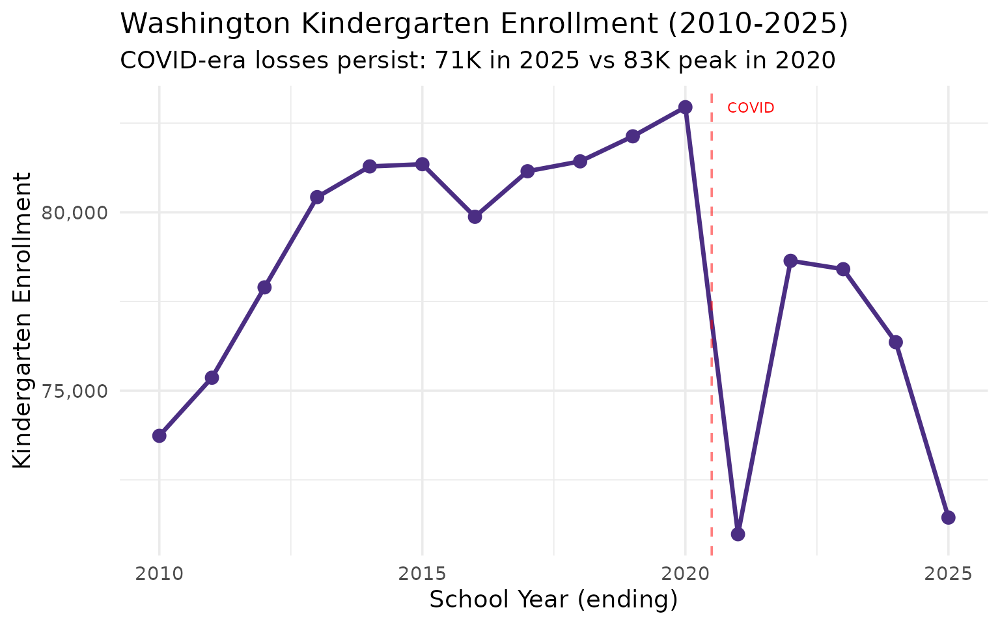
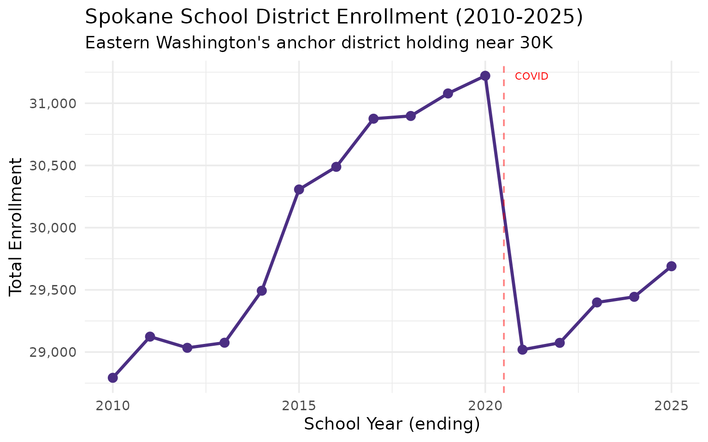
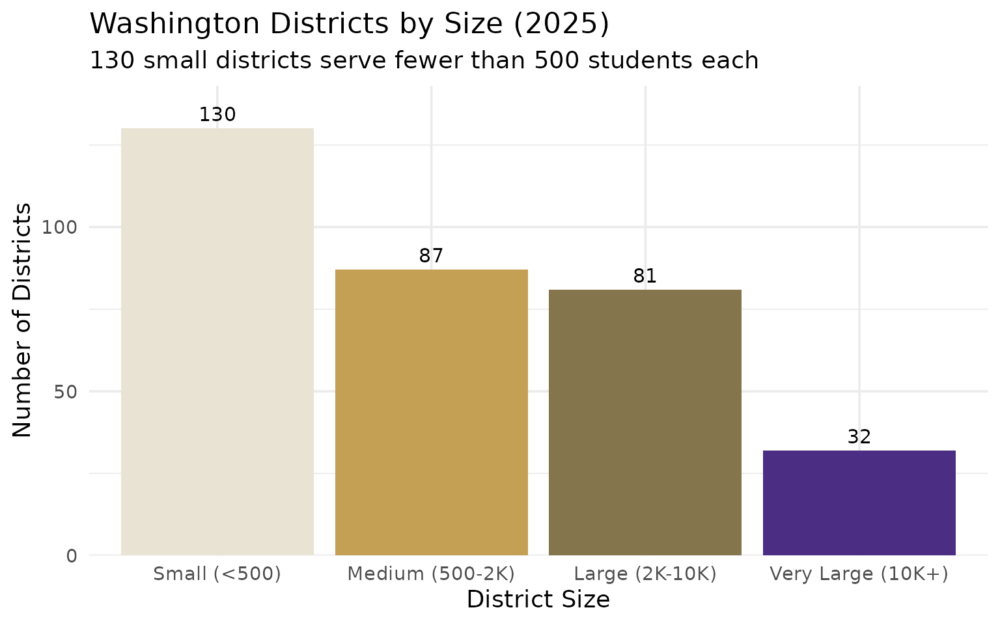
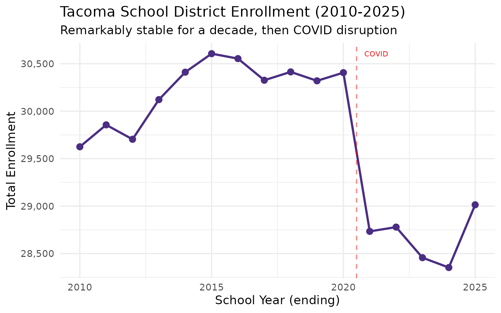
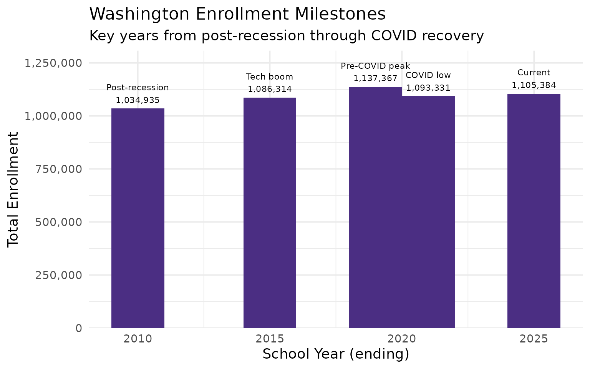
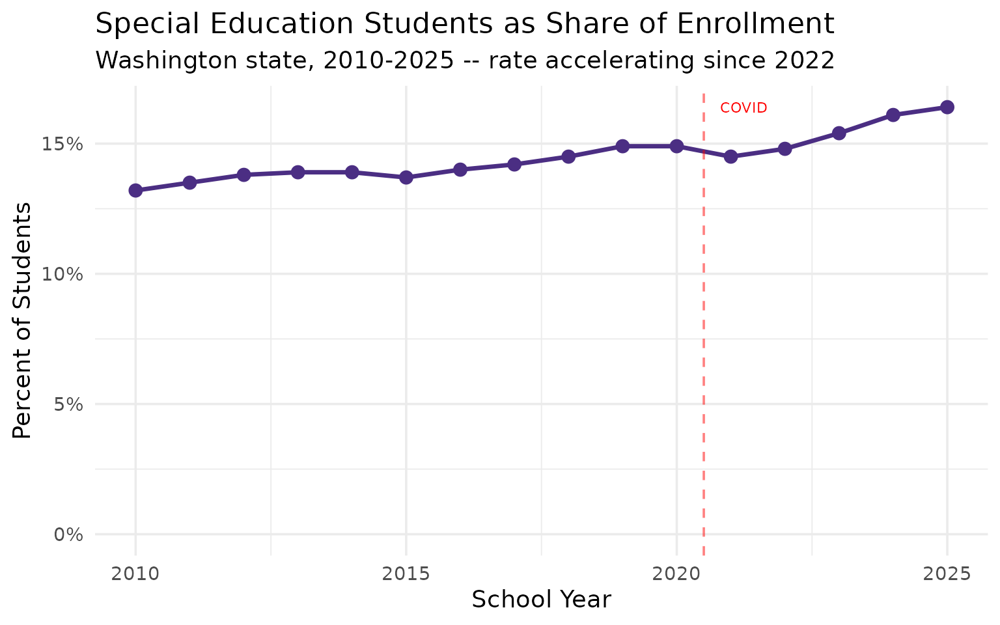
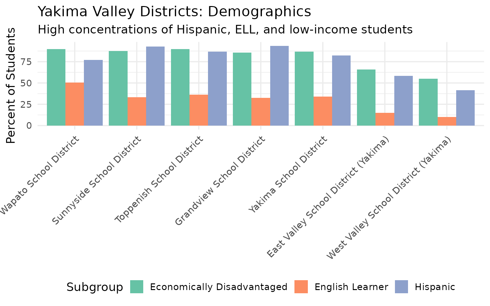
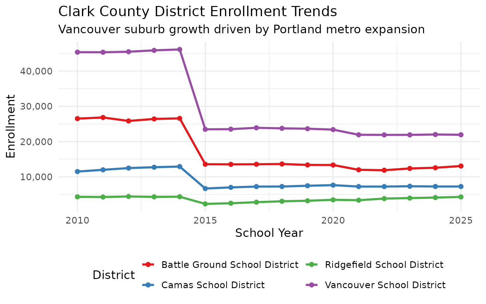
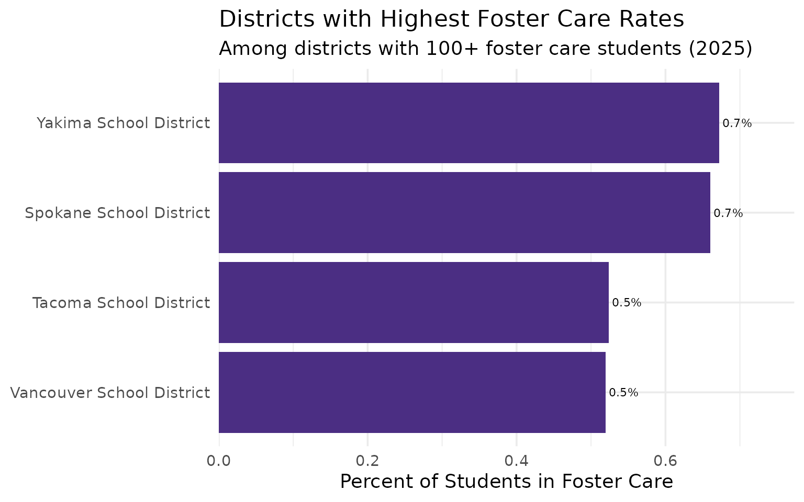
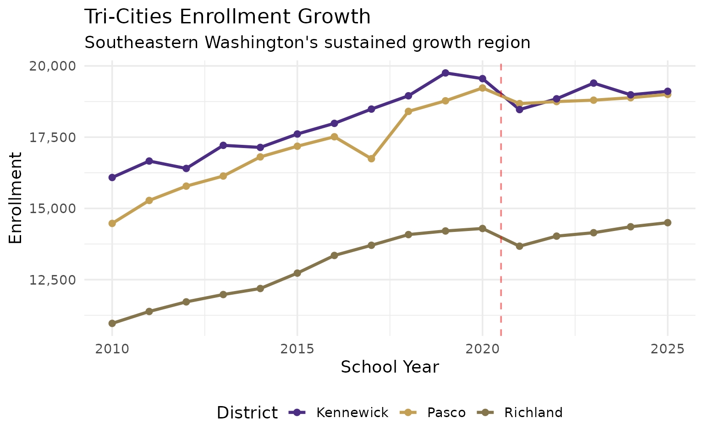

15 Insights from Washington School Enrollment Data
Source:vignettes/enrollment_hooks.Rmd
enrollment_hooks.Rmd
library(waschooldata)
library(dplyr)
library(tidyr)
library(ggplot2)
theme_set(theme_minimal(base_size = 14))This vignette explores Washington’s public school enrollment data, surfacing key trends across 16 years of data (2010-2025).
1. Washington added 70,000 students over 16 years before COVID reversed the trend
The Evergreen State grew enrollment steadily from 1.03 million to nearly 1.15 million before the pandemic wiped out years of gains.
enr <- fetch_enr_multi(2010:2025, use_cache = TRUE)
state_totals <- enr |>
filter(is_state, subgroup == "total_enrollment", grade_level == "TOTAL") |>
select(end_year, n_students) |>
mutate(change = n_students - lag(n_students),
pct_change = round(change / lag(n_students) * 100, 2))
stopifnot(nrow(state_totals) > 0)
state_totals
#> end_year n_students change pct_change
#> 1 2010 1034935 NA NA
#> 2 2011 1045333 10398 1.00
#> 3 2012 1051404 6071 0.58
#> 4 2013 1058680 7276 0.69
#> 5 2014 1068234 9554 0.90
#> 6 2015 1086314 18080 1.69
#> 7 2016 1100849 14535 1.34
#> 8 2017 1115820 14971 1.36
#> 9 2018 1130714 14894 1.33
#> 10 2019 1137367 6653 0.59
#> 11 2020 1146882 9515 0.84
#> 12 2021 1093331 -53551 -4.67
#> 13 2022 1091343 -1988 -0.18
#> 14 2023 1096695 5352 0.49
#> 15 2024 1100059 3364 0.31
#> 16 2025 1105384 5325 0.48
print(state_totals)
#> end_year n_students change pct_change
#> 1 2010 1034935 NA NA
#> 2 2011 1045333 10398 1.00
#> 3 2012 1051404 6071 0.58
#> 4 2013 1058680 7276 0.69
#> 5 2014 1068234 9554 0.90
#> 6 2015 1086314 18080 1.69
#> 7 2016 1100849 14535 1.34
#> 8 2017 1115820 14971 1.36
#> 9 2018 1130714 14894 1.33
#> 10 2019 1137367 6653 0.59
#> 11 2020 1146882 9515 0.84
#> 12 2021 1093331 -53551 -4.67
#> 13 2022 1091343 -1988 -0.18
#> 14 2023 1096695 5352 0.49
#> 15 2024 1100059 3364 0.31
#> 16 2025 1105384 5325 0.48
ggplot(state_totals, aes(x = end_year, y = n_students)) +
geom_line(linewidth = 1.2, color = "#4B2E83") +
geom_point(size = 3, color = "#4B2E83") +
geom_vline(xintercept = 2020.5, linetype = "dashed", color = "red", alpha = 0.5) +
annotate("text", x = 2020.8, y = max(state_totals$n_students, na.rm = TRUE),
label = "COVID", hjust = 0, color = "red", size = 3) +
scale_y_continuous(labels = scales::comma) +
labs(
title = "Washington Public School Enrollment (2010-2025)",
subtitle = "A decade of growth disrupted by the pandemic",
x = "School Year (ending)",
y = "Total Enrollment"
)
2. Seattle peaked at 56,000 students then lost 9% in five years
Washington’s largest district peaked in 2020 and has lost nearly 5,000 students since, even as tech industry growth transformed the region.
seattle <- enr |>
filter(is_district, subgroup == "total_enrollment", grade_level == "TOTAL",
grepl("Seattle", district_name, ignore.case = TRUE)) |>
select(end_year, district_name, n_students) |>
mutate(pct_of_peak = round(n_students / max(n_students) * 100, 1))
stopifnot(nrow(seattle) > 0)
seattle
#> end_year district_name n_students pct_of_peak
#> 1 2010 Seattle School District No. 1 47058 84.0
#> 2 2011 Seattle School District No. 1 48299 86.2
#> 3 2012 Seattle School District No. 1 49851 88.9
#> 4 2013 Seattle School District No. 1 51201 91.3
#> 5 2014 Seattle School District No. 1 52181 93.1
#> 6 2015 Seattle School District No. 1 53361 95.2
#> 7 2016 Seattle School District No. 1 53767 95.9
#> 8 2017 Seattle School District No. 1 54722 97.6
#> 9 2018 Seattle School District No. 1 55321 98.7
#> 10 2019 Seattle School District No. 1 55325 98.7
#> 11 2020 Seattle School District No. 1 56051 100.0
#> 12 2021 Seattle School District No. 1 54021 96.4
#> 13 2022 Seattle School District No. 1 51653 92.2
#> 14 2023 Seattle School District No. 1 51528 91.9
#> 15 2024 Seattle School District No. 1 50968 90.9
#> 16 2025 Seattle School District No. 1 51200 91.3
top_districts <- enr |>
filter(is_district, subgroup == "total_enrollment", grade_level == "TOTAL",
end_year == 2025) |>
arrange(desc(n_students)) |>
head(5) |>
pull(district_id)
stopifnot(length(top_districts) > 0)
top5_data <- enr |>
filter(is_district, subgroup == "total_enrollment", grade_level == "TOTAL",
district_id %in% top_districts)
stopifnot(nrow(top5_data) > 0)
print(top5_data |> filter(end_year == 2025) |> select(district_name, n_students))
#> district_name n_students
#> 1 Spokane School District 29690
#> 2 Lake Washington School District 31146
#> 3 Kent School District 25455
#> 4 Tacoma School District 29014
#> 5 Seattle School District No. 1 51200
ggplot(top5_data, aes(x = end_year, y = n_students, color = district_name)) +
geom_line(linewidth = 1.2) +
geom_point(size = 2) +
geom_vline(xintercept = 2020.5, linetype = "dashed", color = "red", alpha = 0.5) +
scale_y_continuous(labels = scales::comma) +
labs(
title = "Washington's Top 5 Districts: Enrollment Trends",
subtitle = "Seattle peaked in 2020 while suburban districts continue growing",
x = "School Year",
y = "Enrollment",
color = "District"
) +
theme(legend.position = "bottom") +
guides(color = guide_legend(nrow = 2))
3. White students dropped from 64% to 48% as Hispanic enrollment nearly doubled
The state’s demographics reflect Pacific Rim immigration and a growing Hispanic population that rose from 167K to 295K students.
demographics <- enr |>
filter(is_state, grade_level == "TOTAL",
subgroup %in% c("white", "hispanic", "asian", "black", "multiracial"),
end_year %in% c(2010, 2015, 2020, 2025)) |>
select(end_year, subgroup, n_students, pct) |>
mutate(pct = round(pct * 100, 1))
stopifnot(nrow(demographics) > 0)
demographics |>
pivot_wider(names_from = end_year, values_from = c(n_students, pct))
#> # A tibble: 5 × 9
#> subgroup n_students_2010 n_students_2015 n_students_2020 n_students_2025
#> <chr> <dbl> <dbl> <dbl> <dbl>
#> 1 white 657143 615697 601749 526102
#> 2 black 56515 48578 50251 53176
#> 3 hispanic 167426 235730 273842 294985
#> 4 asian 80375 77981 91377 100676
#> 5 multiracial 35867 81757 101807 101068
#> # ℹ 4 more variables: pct_2010 <dbl>, pct_2015 <dbl>, pct_2020 <dbl>,
#> # pct_2025 <dbl>
demo_trend <- enr |>
filter(is_state, grade_level == "TOTAL",
subgroup %in% c("white", "hispanic", "asian", "black", "multiracial"))
stopifnot(nrow(demo_trend) > 0)
print(demo_trend |> filter(end_year == 2025) |> select(subgroup, n_students, pct))
#> subgroup n_students pct
#> 1 white 526102 0.47594501
#> 2 black 53176 0.04810636
#> 3 hispanic 294985 0.26686201
#> 4 asian 100676 0.09107785
#> 5 multiracial 101068 0.09143248
ggplot(demo_trend, aes(x = end_year, y = pct * 100, color = subgroup)) +
geom_line(linewidth = 1.2) +
geom_point(size = 2) +
scale_y_continuous(labels = function(x) paste0(x, "%")) +
scale_color_brewer(palette = "Set2",
labels = c("Asian", "Black", "Hispanic", "Multiracial", "White")) +
labs(
title = "Washington's Shifting Demographics (2010-2025)",
subtitle = "White enrollment declining as Hispanic and multiracial populations grow",
x = "School Year",
y = "Percent of Students",
color = "Race/Ethnicity"
) +
theme(legend.position = "bottom")
4. Puget Sound holds 427K students – nearly 4x Eastern Washington
The I-5 corridor dominates enrollment, but Eastern Washington’s districts face different challenges.
esd_enrollment <- enr |>
filter(is_district, subgroup == "total_enrollment", grade_level == "TOTAL",
end_year == 2025, !is.na(esd_name)) |>
group_by(esd_name) |>
summarize(
districts = n(),
students = sum(n_students, na.rm = TRUE),
.groups = "drop"
) |>
arrange(desc(students))
stopifnot(nrow(esd_enrollment) > 0)
esd_enrollment
#> # A tibble: 11 × 3
#> esd_name districts students
#> <chr> <int> <dbl>
#> 1 Puget Sound Educational Service District 121 35 427222
#> 2 Northwest Educational Service District 189 35 166971
#> 3 Educational Service District 112 30 97301
#> 4 Educational Service District 101 59 94984
#> 5 Educational Service District 123 22 77778
#> 6 Capital Region ESD 113 44 75121
#> 7 Educational Service District 105 25 65229
#> 8 North Central Educational Service District 171 29 48048
#> 9 Olympic Educational Service District 114 15 46477
#> 10 Washington State Charter School Commission 15 4600
#> 11 Spokane Public Schools Charter Authorizer 2 268
print(esd_enrollment)
#> # A tibble: 11 × 3
#> esd_name districts students
#> <chr> <int> <dbl>
#> 1 Puget Sound Educational Service District 121 35 427222
#> 2 Northwest Educational Service District 189 35 166971
#> 3 Educational Service District 112 30 97301
#> 4 Educational Service District 101 59 94984
#> 5 Educational Service District 123 22 77778
#> 6 Capital Region ESD 113 44 75121
#> 7 Educational Service District 105 25 65229
#> 8 North Central Educational Service District 171 29 48048
#> 9 Olympic Educational Service District 114 15 46477
#> 10 Washington State Charter School Commission 15 4600
#> 11 Spokane Public Schools Charter Authorizer 2 268
esd_enrollment |>
mutate(esd_short = gsub("Educational Service District|ESD", "ESD", esd_name)) |>
mutate(esd_short = forcats::fct_reorder(esd_short, students)) |>
ggplot(aes(x = students, y = esd_short, fill = students)) +
geom_col(show.legend = FALSE) +
geom_text(aes(label = scales::comma(students)), hjust = -0.1, size = 3) +
scale_x_continuous(labels = scales::comma, expand = expansion(mult = c(0, 0.2))) +
scale_fill_gradient(low = "#E8E3D3", high = "#4B2E83") +
labs(
title = "Washington Enrollment by Educational Service District",
subtitle = "Puget Sound ESD 121 dominates with 427K students",
x = "Total Students",
y = NULL
)
5. Suburban districts are booming: Sumner-Bonney Lake up 23% since 2015
The fastest-growing large districts are spread across the state, from Sumner-Bonney Lake south of Seattle to Central Valley near Spokane.
growth_rates <- enr |>
filter(is_district, subgroup == "total_enrollment", grade_level == "TOTAL",
end_year %in% c(2015, 2025)) |>
select(district_id, district_name, end_year, n_students) |>
pivot_wider(names_from = end_year, values_from = n_students, names_prefix = "yr_") |>
filter(yr_2015 > 5000) |>
mutate(
change = yr_2025 - yr_2015,
pct_change = round((yr_2025 - yr_2015) / yr_2015 * 100, 1)
) |>
arrange(desc(pct_change))
stopifnot(nrow(growth_rates) > 0)
head(growth_rates, 10)
#> # A tibble: 10 × 6
#> district_id district_name yr_2015 yr_2025 change pct_change
#> <chr> <chr> <dbl> <dbl> <dbl> <dbl>
#> 1 100259 Sumner-Bonney Lake School Dist… 8988 11048 2060 22.9
#> 2 100126 Lake Stevens School District 8515 10215 1700 20
#> 3 100016 Auburn School District 15722 18234 2512 16
#> 4 100183 Omak School District 5257 6071 814 15.5
#> 5 100022 Bethel School District 18678 21538 2860 15.3
#> 6 100263 Tahoma School District 8118 9286 1168 14.4
#> 7 100127 Lake Washington School District 27293 31146 3853 14.1
#> 8 100218 Richland School District 12729 14499 1770 13.9
#> 9 100039 Central Valley School District 13396 15102 1706 12.7
#> 10 100195 Pasco School District 17182 19001 1819 10.6
growth_top10 <- head(growth_rates, 10)
print(growth_top10)
#> # A tibble: 10 × 6
#> district_id district_name yr_2015 yr_2025 change pct_change
#> <chr> <chr> <dbl> <dbl> <dbl> <dbl>
#> 1 100259 Sumner-Bonney Lake School Dist… 8988 11048 2060 22.9
#> 2 100126 Lake Stevens School District 8515 10215 1700 20
#> 3 100016 Auburn School District 15722 18234 2512 16
#> 4 100183 Omak School District 5257 6071 814 15.5
#> 5 100022 Bethel School District 18678 21538 2860 15.3
#> 6 100263 Tahoma School District 8118 9286 1168 14.4
#> 7 100127 Lake Washington School District 27293 31146 3853 14.1
#> 8 100218 Richland School District 12729 14499 1770 13.9
#> 9 100039 Central Valley School District 13396 15102 1706 12.7
#> 10 100195 Pasco School District 17182 19001 1819 10.6
growth_top10 |>
mutate(district_name = forcats::fct_reorder(district_name, pct_change)) |>
ggplot(aes(x = pct_change, y = district_name, fill = pct_change > 0)) +
geom_col(show.legend = FALSE) +
geom_text(aes(label = paste0("+", pct_change, "%")),
hjust = -0.1, size = 3) +
scale_x_continuous(expand = expansion(mult = c(0.1, 0.15))) +
scale_fill_manual(values = c("TRUE" = "#4B2E83", "FALSE" = "#C4A055")) +
labs(
title = "Fastest Growing Large Districts (2015-2025)",
subtitle = "Among districts with 5,000+ students in 2015",
x = "Percent Change",
y = NULL
)
6. The kindergarten cliff is real: K enrollment down 14% from 2020 peak
Washington’s kindergarten enrollment dropped during COVID and hasn’t recovered, signaling smaller cohorts ahead.
k_trend <- enr |>
filter(is_state, subgroup == "total_enrollment", grade_level == "K") |>
select(end_year, n_students) |>
mutate(pct_of_peak = round(n_students / max(n_students) * 100, 1))
stopifnot(nrow(k_trend) > 0)
k_trend
#> end_year n_students pct_of_peak
#> 1 2010 73735 88.9
#> 2 2011 75364 90.9
#> 3 2012 77896 93.9
#> 4 2013 80426 97.0
#> 5 2014 81286 98.0
#> 6 2015 81348 98.1
#> 7 2016 79874 96.3
#> 8 2017 81151 97.8
#> 9 2018 81428 98.2
#> 10 2019 82130 99.0
#> 11 2020 82947 100.0
#> 12 2021 70977 85.6
#> 13 2022 78640 94.8
#> 14 2023 78406 94.5
#> 15 2024 76359 92.1
#> 16 2025 71443 86.1
print(k_trend)
#> end_year n_students pct_of_peak
#> 1 2010 73735 88.9
#> 2 2011 75364 90.9
#> 3 2012 77896 93.9
#> 4 2013 80426 97.0
#> 5 2014 81286 98.0
#> 6 2015 81348 98.1
#> 7 2016 79874 96.3
#> 8 2017 81151 97.8
#> 9 2018 81428 98.2
#> 10 2019 82130 99.0
#> 11 2020 82947 100.0
#> 12 2021 70977 85.6
#> 13 2022 78640 94.8
#> 14 2023 78406 94.5
#> 15 2024 76359 92.1
#> 16 2025 71443 86.1
ggplot(k_trend, aes(x = end_year, y = n_students)) +
geom_line(linewidth = 1.2, color = "#4B2E83") +
geom_point(size = 3, color = "#4B2E83") +
geom_vline(xintercept = 2020.5, linetype = "dashed", color = "red", alpha = 0.5) +
annotate("text", x = 2020.8, y = max(k_trend$n_students, na.rm = TRUE),
label = "COVID", hjust = 0, color = "red", size = 3) +
scale_y_continuous(labels = scales::comma) +
labs(
title = "Washington Kindergarten Enrollment (2010-2025)",
subtitle = "COVID-era losses persist: 71K in 2025 vs 83K peak in 2020",
x = "School Year (ending)",
y = "Kindergarten Enrollment"
)
7. Spokane anchors Eastern Washington with nearly 30,000 students
Spokane Public Schools serves 29,690 students, making it the largest district east of the Cascades and the state’s second-largest overall.
spokane <- enr |>
filter(is_district, subgroup == "total_enrollment", grade_level == "TOTAL",
grepl("Spokane", district_name, ignore.case = TRUE),
end_year == 2025) |>
select(district_name, n_students) |>
arrange(desc(n_students))
stopifnot(nrow(spokane) > 0)
spokane
#> district_name n_students
#> 1 Spokane School District 29690
#> 2 East Valley School District (Spokane) 3655
#> 3 West Valley School District (Spokane) 3501
#> 4 Spokane International Academy 830
#> 5 Innovation Spokane Schools 235
spokane_trend <- enr |>
filter(is_district, subgroup == "total_enrollment", grade_level == "TOTAL",
grepl("^Spokane School District$", district_name))
stopifnot(nrow(spokane_trend) > 0)
print(spokane_trend |> select(end_year, n_students))
#> end_year n_students
#> 1 2010 28793
#> 2 2011 29124
#> 3 2012 29034
#> 4 2013 29075
#> 5 2014 29493
#> 6 2015 30307
#> 7 2016 30489
#> 8 2017 30876
#> 9 2018 30898
#> 10 2019 31079
#> 11 2020 31221
#> 12 2021 29019
#> 13 2022 29074
#> 14 2023 29399
#> 15 2024 29444
#> 16 2025 29690
ggplot(spokane_trend, aes(x = end_year, y = n_students)) +
geom_line(linewidth = 1.2, color = "#4B2E83") +
geom_point(size = 3, color = "#4B2E83") +
geom_vline(xintercept = 2020.5, linetype = "dashed", color = "red", alpha = 0.5) +
annotate("text", x = 2020.8, y = max(spokane_trend$n_students, na.rm = TRUE),
label = "COVID", hjust = 0, color = "red", size = 3) +
scale_y_continuous(labels = scales::comma) +
labs(
title = "Spokane School District Enrollment (2010-2025)",
subtitle = "Eastern Washington's anchor district holding near 30K",
x = "School Year (ending)",
y = "Total Enrollment"
)
8. 130 districts have fewer than 500 students
Nearly 40% of Washington’s districts serve fewer than 500 students, challenging their long-term viability.
district_sizes <- enr |>
filter(is_district, subgroup == "total_enrollment", grade_level == "TOTAL",
end_year == 2025) |>
mutate(size_bucket = case_when(
n_students < 500 ~ "Small (<500)",
n_students < 2000 ~ "Medium (500-2K)",
n_students < 10000 ~ "Large (2K-10K)",
TRUE ~ "Very Large (10K+)"
)) |>
count(size_bucket)
stopifnot(nrow(district_sizes) > 0)
district_sizes
#> size_bucket n
#> 1 Large (2K-10K) 81
#> 2 Medium (500-2K) 87
#> 3 Small (<500) 130
#> 4 Very Large (10K+) 32
print(district_sizes)
#> size_bucket n
#> 1 Large (2K-10K) 81
#> 2 Medium (500-2K) 87
#> 3 Small (<500) 130
#> 4 Very Large (10K+) 32
district_sizes |>
mutate(size_bucket = factor(size_bucket,
levels = c("Small (<500)", "Medium (500-2K)", "Large (2K-10K)", "Very Large (10K+)"))) |>
ggplot(aes(x = size_bucket, y = n, fill = size_bucket)) +
geom_col(show.legend = FALSE) +
geom_text(aes(label = n), vjust = -0.5, size = 4) +
scale_fill_manual(values = c("#E8E3D3", "#C4A055", "#85754D", "#4B2E83")) +
scale_y_continuous(expand = expansion(mult = c(0, 0.1))) +
labs(
title = "Washington Districts by Size (2025)",
subtitle = "130 small districts serve fewer than 500 students each",
x = "District Size",
y = "Number of Districts"
)
9. Tacoma held steady at ~30K for a decade before COVID
The state’s third-largest city maintained remarkably stable enrollment from 2010 to 2020 before losing 2,000 students.
tacoma <- enr |>
filter(is_district, subgroup == "total_enrollment", grade_level == "TOTAL",
grepl("Tacoma", district_name, ignore.case = TRUE)) |>
select(end_year, district_name, n_students)
stopifnot(nrow(tacoma) > 0)
tacoma
#> end_year district_name n_students
#> 1 2010 Tacoma School District 29625
#> 2 2011 Tacoma School District 29856
#> 3 2012 Tacoma School District 29704
#> 4 2013 Tacoma School District 30122
#> 5 2014 Tacoma School District 30411
#> 6 2015 Tacoma School District 30606
#> 7 2016 Tacoma School District 30554
#> 8 2017 Tacoma School District 30326
#> 9 2018 Tacoma School District 30414
#> 10 2019 Tacoma School District 30320
#> 11 2020 Tacoma School District 30406
#> 12 2021 Tacoma School District 28734
#> 13 2022 Tacoma School District 28779
#> 14 2023 Tacoma School District 28457
#> 15 2024 Tacoma School District 28353
#> 16 2025 Tacoma School District 29014
print(tacoma)
#> end_year district_name n_students
#> 1 2010 Tacoma School District 29625
#> 2 2011 Tacoma School District 29856
#> 3 2012 Tacoma School District 29704
#> 4 2013 Tacoma School District 30122
#> 5 2014 Tacoma School District 30411
#> 6 2015 Tacoma School District 30606
#> 7 2016 Tacoma School District 30554
#> 8 2017 Tacoma School District 30326
#> 9 2018 Tacoma School District 30414
#> 10 2019 Tacoma School District 30320
#> 11 2020 Tacoma School District 30406
#> 12 2021 Tacoma School District 28734
#> 13 2022 Tacoma School District 28779
#> 14 2023 Tacoma School District 28457
#> 15 2024 Tacoma School District 28353
#> 16 2025 Tacoma School District 29014
ggplot(tacoma, aes(x = end_year, y = n_students)) +
geom_line(linewidth = 1.2, color = "#4B2E83") +
geom_point(size = 3, color = "#4B2E83") +
geom_vline(xintercept = 2020.5, linetype = "dashed", color = "red", alpha = 0.5) +
annotate("text", x = 2020.8, y = max(tacoma$n_students, na.rm = TRUE),
label = "COVID", hjust = 0, color = "red", size = 3) +
scale_y_continuous(labels = scales::comma) +
labs(
title = "Tacoma School District Enrollment (2010-2025)",
subtitle = "Remarkably stable for a decade, then COVID disruption",
x = "School Year (ending)",
y = "Total Enrollment"
)
10. From 1.03M to 1.1M: 16 years of enrollment milestones
Washington’s enrollment data spans 2010-2025, documenting the tech boom, pandemic disruption, and demographic transformation.
decade_summary <- enr |>
filter(is_state, subgroup == "total_enrollment", grade_level == "TOTAL",
end_year %in% c(2010, 2015, 2019, 2021, 2025)) |>
select(end_year, n_students) |>
mutate(label = case_when(
end_year == 2010 ~ "Post-recession",
end_year == 2015 ~ "Tech boom",
end_year == 2019 ~ "Pre-COVID peak",
end_year == 2021 ~ "COVID low",
end_year == 2025 ~ "Current"
))
stopifnot(nrow(decade_summary) > 0)
decade_summary
#> end_year n_students label
#> 1 2010 1034935 Post-recession
#> 2 2015 1086314 Tech boom
#> 3 2019 1137367 Pre-COVID peak
#> 4 2021 1093331 COVID low
#> 5 2025 1105384 Current
print(decade_summary)
#> end_year n_students label
#> 1 2010 1034935 Post-recession
#> 2 2015 1086314 Tech boom
#> 3 2019 1137367 Pre-COVID peak
#> 4 2021 1093331 COVID low
#> 5 2025 1105384 Current
ggplot(decade_summary, aes(x = end_year, y = n_students)) +
geom_col(fill = "#4B2E83", width = 2) +
geom_text(aes(label = paste0(label, "\n", scales::comma(n_students))),
vjust = -0.3, size = 3) +
scale_y_continuous(labels = scales::comma, expand = expansion(mult = c(0, 0.15))) +
labs(
title = "Washington Enrollment Milestones",
subtitle = "Key years from post-recession through COVID recovery",
x = "School Year (ending)",
y = "Total Enrollment"
)
11. 1 in 6 Washington students now receives special education services
Special education identification rose from 13.2% to 16.4% over 16 years, with the rate accelerating since 2022.
sped_trend <- enr |>
filter(is_state, grade_level == "TOTAL", subgroup == "special_ed") |>
select(end_year, n_students, pct) |>
mutate(pct = round(pct * 100, 1))
stopifnot(nrow(sped_trend) > 0)
sped_trend
#> end_year n_students pct
#> 1 2010 136129 13.2
#> 2 2011 141583 13.5
#> 3 2012 145177 13.8
#> 4 2013 146773 13.9
#> 5 2014 148462 13.9
#> 6 2015 149314 13.7
#> 7 2016 153648 14.0
#> 8 2017 157984 14.2
#> 9 2018 163839 14.5
#> 10 2019 169270 14.9
#> 11 2020 170961 14.9
#> 12 2021 158218 14.5
#> 13 2022 161967 14.8
#> 14 2023 168599 15.4
#> 15 2024 176801 16.1
#> 16 2025 181381 16.4
print(sped_trend)
#> end_year n_students pct
#> 1 2010 136129 13.2
#> 2 2011 141583 13.5
#> 3 2012 145177 13.8
#> 4 2013 146773 13.9
#> 5 2014 148462 13.9
#> 6 2015 149314 13.7
#> 7 2016 153648 14.0
#> 8 2017 157984 14.2
#> 9 2018 163839 14.5
#> 10 2019 169270 14.9
#> 11 2020 170961 14.9
#> 12 2021 158218 14.5
#> 13 2022 161967 14.8
#> 14 2023 168599 15.4
#> 15 2024 176801 16.1
#> 16 2025 181381 16.4
ggplot(sped_trend, aes(x = end_year, y = pct)) +
geom_line(linewidth = 1.2, color = "#4B2E83") +
geom_point(size = 3, color = "#4B2E83") +
geom_vline(xintercept = 2020.5, linetype = "dashed", color = "red", alpha = 0.5) +
annotate("text", x = 2020.8, y = max(sped_trend$pct, na.rm = TRUE),
label = "COVID", hjust = 0, color = "red", size = 3) +
scale_y_continuous(labels = function(x) paste0(x, "%"),
limits = c(0, NA)) +
labs(
title = "Special Education Students as Share of Enrollment",
subtitle = "Washington state, 2010-2025 -- rate accelerating since 2022",
x = "School Year",
y = "Percent of Students"
)
12. Yakima Valley: where 93% of students are Hispanic and half are English learners
Central Washington’s agricultural heartland has the state’s highest concentrations of English learners and economically disadvantaged students.
yakima_districts <- enr |>
filter(is_district, grade_level == "TOTAL", end_year == 2025,
grepl("Yakima|Sunnyside|Toppenish|Wapato|Grandview", district_name)) |>
select(district_name, subgroup, n_students) |>
pivot_wider(names_from = subgroup, values_from = n_students) |>
mutate(
pct_hispanic = round(hispanic / total_enrollment * 100, 1),
pct_ell = round(lep / total_enrollment * 100, 1),
pct_econ_disadv = round(econ_disadv / total_enrollment * 100, 1)
) |>
select(district_name, total_enrollment, pct_hispanic, pct_ell, pct_econ_disadv) |>
arrange(desc(total_enrollment))
stopifnot(nrow(yakima_districts) > 0)
yakima_districts
#> # A tibble: 7 × 5
#> district_name total_enrollment pct_hispanic pct_ell pct_econ_disadv
#> <chr> <dbl> <dbl> <dbl> <dbl>
#> 1 Yakima School District 15621 82.1 34.2 86.8
#> 2 Sunnyside School Distri… 6169 92.9 33.3 87.6
#> 3 West Valley School Dist… 5570 41.5 9.9 54.9
#> 4 Toppenish School Distri… 3670 86.9 36.3 89.9
#> 5 Grandview School Distri… 3586 93.4 32.7 85.5
#> 6 East Valley School Dist… 3408 58.5 15 65.7
#> 7 Wapato School District 3225 77.2 50.6 89.9
yakima_long <- enr |>
filter(is_district, grade_level == "TOTAL", end_year == 2025,
grepl("Yakima|Sunnyside|Toppenish|Wapato|Grandview", district_name),
subgroup %in% c("hispanic", "lep", "econ_disadv")) |>
select(district_name, subgroup, pct) |>
mutate(pct = pct * 100,
subgroup = case_when(
subgroup == "hispanic" ~ "Hispanic",
subgroup == "lep" ~ "English Learner",
subgroup == "econ_disadv" ~ "Economically Disadvantaged"
))
stopifnot(nrow(yakima_long) > 0)
print(yakima_long)
#> district_name subgroup pct
#> 1 Yakima School District Hispanic 82.14583
#> 2 East Valley School District (Yakima) Hispanic 58.45070
#> 3 Grandview School District Hispanic 93.41885
#> 4 Sunnyside School District Hispanic 92.89998
#> 5 Toppenish School District Hispanic 86.86649
#> 6 Wapato School District Hispanic 77.17829
#> 7 West Valley School District (Yakima) Hispanic 41.50808
#> 8 Yakima School District English Learner 34.19115
#> 9 East Valley School District (Yakima) English Learner 14.99413
#> 10 Grandview School District English Learner 32.71054
#> 11 Sunnyside School District English Learner 33.34414
#> 12 Toppenish School District English Learner 36.32153
#> 13 Wapato School District English Learner 50.57364
#> 14 West Valley School District (Yakima) English Learner 9.94614
#> 15 Yakima School District Economically Disadvantaged 86.83183
#> 16 East Valley School District (Yakima) Economically Disadvantaged 65.66901
#> 17 Grandview School District Economically Disadvantaged 85.52705
#> 18 Sunnyside School District Economically Disadvantaged 87.59929
#> 19 Toppenish School District Economically Disadvantaged 89.89101
#> 20 Wapato School District Economically Disadvantaged 89.86047
#> 21 West Valley School District (Yakima) Economically Disadvantaged 54.93716
ggplot(yakima_long, aes(x = reorder(district_name, -pct), y = pct, fill = subgroup)) +
geom_col(position = "dodge") +
scale_fill_brewer(palette = "Set2") +
labs(
title = "Yakima Valley Districts: Demographics",
subtitle = "High concentrations of Hispanic, ELL, and low-income students",
x = NULL,
y = "Percent of Students",
fill = "Subgroup"
) +
theme(axis.text.x = element_text(angle = 45, hjust = 1),
legend.position = "bottom")
13. Ridgefield grew 84% while Vancouver lost 7% – Clark County’s diverging paths
The Portland metro spillover has reshaped Clark County, with small suburban districts booming while the urban core declines.
clark_districts <- enr |>
filter(is_district, subgroup == "total_enrollment", grade_level == "TOTAL",
grepl("Vancouver|Evergreen SD|Camas|Battle Ground|Ridgefield", district_name),
end_year %in% c(2015, 2020, 2025)) |>
select(district_name, end_year, n_students) |>
pivot_wider(names_from = end_year, values_from = n_students, names_prefix = "yr_") |>
mutate(
growth_2015_2025 = round((yr_2025 - yr_2015) / yr_2015 * 100, 1)
) |>
arrange(desc(growth_2015_2025))
stopifnot(nrow(clark_districts) > 0)
clark_districts
#> # A tibble: 4 × 5
#> district_name yr_2015 yr_2020 yr_2025 growth_2015_2025
#> <chr> <dbl> <dbl> <dbl> <dbl>
#> 1 Ridgefield School District 2343 3499 4315 84.2
#> 2 Camas School District 6695 7654 7272 8.6
#> 3 Battle Ground School District 13589 13365 13080 -3.7
#> 4 Vancouver School District 23486 23404 21943 -6.6
clark_trend <- enr |>
filter(is_district, subgroup == "total_enrollment", grade_level == "TOTAL",
grepl("Vancouver|Evergreen SD|Camas|Battle Ground|Ridgefield", district_name))
stopifnot(nrow(clark_trend) > 0)
print(clark_trend |> filter(end_year == 2025) |> select(district_name, n_students))
#> district_name n_students
#> 1 Vancouver School District 21943
#> 2 Camas School District 7272
#> 3 Battle Ground School District 13080
#> 4 Ridgefield School District 4315
ggplot(clark_trend, aes(x = end_year, y = n_students, color = district_name)) +
geom_line(linewidth = 1.2) +
geom_point(size = 2) +
geom_vline(xintercept = 2020.5, linetype = "dashed", color = "red", alpha = 0.5) +
scale_y_continuous(labels = scales::comma) +
scale_color_brewer(palette = "Set1") +
labs(
title = "Clark County District Enrollment Trends",
subtitle = "Ridgefield booming while Vancouver declines",
x = "School Year",
y = "Enrollment",
color = "District"
) +
theme(legend.position = "bottom") +
guides(color = guide_legend(nrow = 2))
14. Foster care enrollment dropped 53% from 2019 peak
Washington tracks foster care enrollment at every school, revealing the population peaked at 7,573 in 2019 and has since dropped to 3,560.
foster_trend <- enr |>
filter(is_state, grade_level == "TOTAL", subgroup == "foster_care") |>
select(end_year, n_students, pct) |>
mutate(pct = round(pct * 100, 2))
stopifnot(nrow(foster_trend) > 0)
foster_trend
#> end_year n_students pct
#> 1 2010 6670 0.64
#> 2 2011 6715 0.64
#> 3 2012 6124 0.58
#> 4 2013 5627 0.53
#> 5 2014 5452 0.51
#> 6 2015 5268 0.48
#> 7 2016 5224 0.47
#> 8 2017 5873 0.53
#> 9 2018 6739 0.60
#> 10 2019 7573 0.67
#> 11 2020 6812 0.59
#> 12 2021 5598 0.51
#> 13 2022 4903 0.45
#> 14 2023 4112 0.37
#> 15 2024 3317 0.30
#> 16 2025 3560 0.32
print(foster_trend)
#> end_year n_students pct
#> 1 2010 6670 0.64
#> 2 2011 6715 0.64
#> 3 2012 6124 0.58
#> 4 2013 5627 0.53
#> 5 2014 5452 0.51
#> 6 2015 5268 0.48
#> 7 2016 5224 0.47
#> 8 2017 5873 0.53
#> 9 2018 6739 0.60
#> 10 2019 7573 0.67
#> 11 2020 6812 0.59
#> 12 2021 5598 0.51
#> 13 2022 4903 0.45
#> 14 2023 4112 0.37
#> 15 2024 3317 0.30
#> 16 2025 3560 0.32
ggplot(foster_trend, aes(x = end_year, y = n_students)) +
geom_line(linewidth = 1.2, color = "#4B2E83") +
geom_point(size = 3, color = "#4B2E83") +
geom_vline(xintercept = 2020.5, linetype = "dashed", color = "red", alpha = 0.5) +
annotate("text", x = 2020.8, y = max(foster_trend$n_students, na.rm = TRUE),
label = "COVID", hjust = 0, color = "red", size = 3) +
scale_y_continuous(labels = scales::comma) +
labs(
title = "Foster Care Students in Washington Schools",
subtitle = "Peaked at 7,573 in 2019, now down to 3,560",
x = "School Year (ending)",
y = "Foster Care Students"
)
15. The Tri-Cities boom: Pasco grew 31% while Kennewick and Richland added 19% and 32%
The Tri-Cities in southeastern Washington have seen sustained population growth driven by Hanford cleanup and agricultural expansion.
tri_cities <- enr |>
filter(is_district, subgroup == "total_enrollment", grade_level == "TOTAL",
grepl("Richland|Kennewick|Pasco", district_name)) |>
select(end_year, district_name, n_students)
stopifnot(nrow(tri_cities) > 0)
tri_cities_wide <- tri_cities |>
filter(end_year %in% c(2010, 2015, 2020, 2025)) |>
pivot_wider(names_from = end_year, values_from = n_students, names_prefix = "yr_")
tri_cities_wide
#> # A tibble: 3 × 5
#> district_name yr_2010 yr_2015 yr_2020 yr_2025
#> <chr> <dbl> <dbl> <dbl> <dbl>
#> 1 Kennewick School District 16085 17611 19554 19109
#> 2 Pasco School District 14473 17182 19226 19001
#> 3 Richland School District 10965 12729 14295 14499
print(tri_cities_wide)
#> # A tibble: 3 × 5
#> district_name yr_2010 yr_2015 yr_2020 yr_2025
#> <chr> <dbl> <dbl> <dbl> <dbl>
#> 1 Kennewick School District 16085 17611 19554 19109
#> 2 Pasco School District 14473 17182 19226 19001
#> 3 Richland School District 10965 12729 14295 14499
ggplot(tri_cities, aes(x = end_year, y = n_students, color = district_name)) +
geom_line(linewidth = 1.2) +
geom_point(size = 2) +
geom_vline(xintercept = 2020.5, linetype = "dashed", color = "red", alpha = 0.5) +
scale_y_continuous(labels = scales::comma) +
scale_color_manual(values = c("Kennewick School District" = "#4B2E83",
"Pasco School District" = "#C4A055",
"Richland School District" = "#85754D"),
labels = function(x) gsub(" School District", "", x)) +
labs(
title = "Tri-Cities Enrollment Growth",
subtitle = "Southeastern Washington's sustained growth region",
x = "School Year",
y = "Enrollment",
color = "District"
) +
theme(legend.position = "bottom")
Summary
Washington’s school enrollment data reveals:
- Steady growth: 1.03M to 1.15M students over a decade before COVID
- Seattle paradox: The largest district lost 9% while suburban districts boomed
- Demographic transformation: White students dropped from 64% to 48%, Hispanic nearly doubled
- Kindergarten cliff: K enrollment down 14% from peak, signaling smaller future cohorts
- Rural pressure: 130 districts serve fewer than 500 students each
- Special education growth: Rising from 13% to 16% of all students
- Agricultural communities: Yakima Valley districts are 80-93% Hispanic
- Clark County divergence: Ridgefield up 84%, Vancouver down 7%
- Foster care decline: Peaked at 7,573 in 2019, now down 53%
- Tri-Cities expansion: All three districts grew 19-32% since 2010
These patterns shape school funding, facility planning, and staffing decisions across the Evergreen State.
Data sourced from the Washington Office of Superintendent of Public Instruction (OSPI) via the Washington State Report Card and data.wa.gov.
Session Info
sessionInfo()
#> R version 4.5.2 (2025-10-31)
#> Platform: x86_64-pc-linux-gnu
#> Running under: Ubuntu 24.04.3 LTS
#>
#> Matrix products: default
#> BLAS: /usr/lib/x86_64-linux-gnu/openblas-pthread/libblas.so.3
#> LAPACK: /usr/lib/x86_64-linux-gnu/openblas-pthread/libopenblasp-r0.3.26.so; LAPACK version 3.12.0
#>
#> locale:
#> [1] LC_CTYPE=C.UTF-8 LC_NUMERIC=C LC_TIME=C.UTF-8
#> [4] LC_COLLATE=C.UTF-8 LC_MONETARY=C.UTF-8 LC_MESSAGES=C.UTF-8
#> [7] LC_PAPER=C.UTF-8 LC_NAME=C LC_ADDRESS=C
#> [10] LC_TELEPHONE=C LC_MEASUREMENT=C.UTF-8 LC_IDENTIFICATION=C
#>
#> time zone: UTC
#> tzcode source: system (glibc)
#>
#> attached base packages:
#> [1] stats graphics grDevices utils datasets methods base
#>
#> other attached packages:
#> [1] ggplot2_4.0.2 tidyr_1.3.2 dplyr_1.2.0 waschooldata_0.1.0
#> [5] testthat_3.3.2
#>
#> loaded via a namespace (and not attached):
#> [1] gtable_0.3.6 jsonlite_2.0.0 compiler_4.5.2 brio_1.1.5
#> [5] tidyselect_1.2.1 jquerylib_0.1.4 systemfonts_1.3.1 scales_1.4.0
#> [9] textshaping_1.0.4 yaml_2.3.12 fastmap_1.2.0 R6_2.6.1
#> [13] labeling_0.4.3 generics_0.1.4 curl_7.0.0 knitr_1.51
#> [17] forcats_1.0.1 tibble_3.3.1 desc_1.4.3 bslib_0.10.0
#> [21] pillar_1.11.1 RColorBrewer_1.1-3 rlang_1.1.7 utf8_1.2.6
#> [25] cachem_1.1.0 xfun_0.56 S7_0.2.1 fs_1.6.6
#> [29] sass_0.4.10 cli_3.6.5 withr_3.0.2 pkgdown_2.2.0
#> [33] magrittr_2.0.4 digest_0.6.39 grid_4.5.2 rappdirs_0.3.4
#> [37] lifecycle_1.0.5 vctrs_0.7.1 evaluate_1.0.5 glue_1.8.0
#> [41] farver_2.1.2 codetools_0.2-20 ragg_1.5.0 httr_1.4.8
#> [45] rmarkdown_2.30 purrr_1.2.1 tools_4.5.2 pkgconfig_2.0.3
#> [49] htmltools_0.5.9